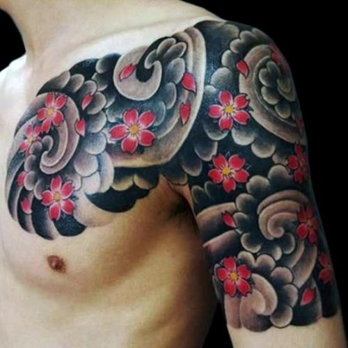

En esta sección podrás encontrar los diferentes diseños junto a parte de su historia
Realismo
Este tipo de tatuajes está inspirado en el movimiento artístico del realismo que surgió como contraposición del romanticismo en Francia en la década de 1850. El romanticismo estaba cargado de imágenes dramáticas, emocionales y haciendo un gran eco del pesimismo típico de la época, a causa de la crisis social y política, que situaba a parte de Europa tras el paso de la Revolución Francesa, acaecida a finales del siglo XVIII (1789). Es considerada una época de retroceso cultural, social e intelectual, en la que no se permitía la libre expresión y la mayor parte del pueblo vivía sumido en una gran incultura y constante represión. Hacia la segunda mitad del siglo, se produce un giro hacia la política liberal, lo que se hizo patente tanto en las ciencias en general, como en la literatura y el arte, naciendo con este movimiento lo que se denominarían las ciencias sociales y la preocupación por el bien estar de la sociedad.
blackwork
Origen e influencias: la gran mayoría de los estilos está influenciado por otras corrientes de tatuaje, son adaptaciones o reinterpretaciones y el blackwork no es una excepción. Algunas menciones históricas hablan de que el estilo blackwork tiene sus orígenes en los pueblos indígenas del mundo y sus tradiciones, concretamente en las tribus maoríes y polinésicas ya que éstas realizaban tatuajes para manifestar sus identidades, estatus social, linaje, representaciones religiosas o ideas de guerra. De ahí que, en ocasiones, este estilo es llamado neotribal porque supone una evolución de los tatuajes tribales, donde se cubren grandes zonas del cuerpo únicamente con color negro.
Old-school
El tatuaje se puede decir que fue introducido a occidente a través de los expedicionarios ingleses dirigidos por el Capitán Cook, en sus viajes a Tahití en 1771, Joseph Banks, científico con gran interés por el arte, que navegó junto al Capitán Cook, describió en 1769 el proceso del tatuaje de la Polinesia. Los marineros de Cook quedaron fascinados e iniciaron la tradición y extendieron rápidamente esta afición entre los marineros, quienes aprendieron el arte y lo practicaron a bordo, elaborando y adquiriendo piezas relacionadas con la unidad, la lucha, la nostalgia o el número de asesinatos cometidos.
New-school
Hay varias explicaciones con respecto a cómo comenzó el estilo New School. Una postula que los tatuadores de California comenzaron a experimentar con varios estilos de diseño ya en la década de 1970 e incluyeron temas tales como los actores de cine, famosos personajes de Disney, e incluso de la USS Enterprise de Star Trek. Se argumenta que durante este tiempo , los nuevos diseños culturales vinieron de las demandas de los clientes, y en menor medida de la inspiración de los tatuadores. Otras explicaciones sitúan la aparición de la New School durante la década de 1980 y 1990.Tatuadores como Marcus Pacheco es un artista reconocido por popularizar este estilo desde aquellos principios. New school es uno de esos estilos de tatuaje que han tenido un enorme aumento en popularidad en los últimos años, sobre todo gracias a los avances en la industria de los tatuajes.La característica de los tattoos New school , al menos la más prominente es el uso de colores muy brillantes: esto sólo ha sido posible gracias a la tecnología que ha permitido la creación de una paleta de colores casi ilimitada.
Japones
Desde la antigüedad, en todo el mundo los seres humanos han punzado su piel para introducir color y tatuar diseños, dibujos, símbolos o líneas que permaneciesen en su cuerpo. Los orígenes de esta costumbre no están claros al igual que los de otras prácticas que conllevan la modificación del cuerpo como la circuncisión, el vendado de pies o el alargamiento del cuello. No obstante, a juzgar por las estatuillas de barro dogū del período Jōmon (entre el 14.000-400 a.C. aproximadamente) y haniwa (figuras características del período Kofun, desde mediados del siglo III a mediados del siglo VII) que se han encontrado, en Japón la costumbre de tatuarse el cuerpo existía ya en los albores de la historia. Entre las islas Amami y las de Ryūkyū en el sur de Japón existió una tradición por la que las mujeres se hacían un tatuaje conocido como hajichi que se extendía desde la punta de los dedos hasta el codo. Los primeros documentos en los que se registró esta costumbre datan del siglo XVI, aunque se cree que esta práctica existía desde mucho antes. Los tatuajes de la parte de la mano en las mujeres indicaban que esta había contraído matrimonio. Las novias recibían bendiciones una vez el tatuaje era completado, y su carga simbólica era la de un ritual de paso a la madurez.